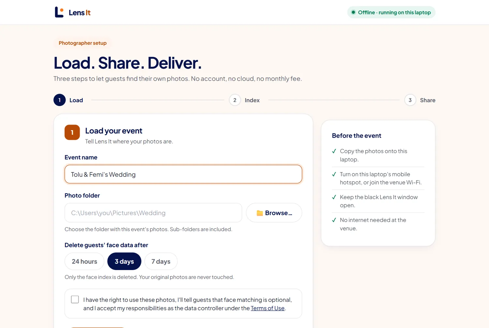
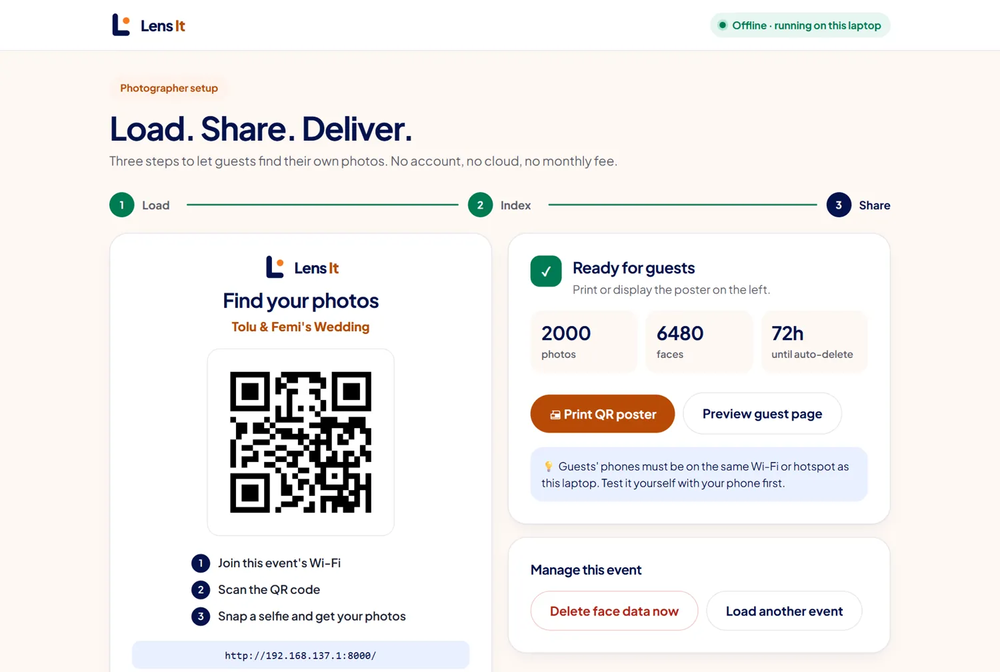

01 · Photographer
Pick your event folder
Name the event and choose the photo folder. Lens It finds every face on your laptop, and you choose when that face data deletes itself.

Guests scan a QR code, take a selfie and see their photos in seconds. It all runs on your laptop, so it works at any venue, even with no internet.

One huge gallery link is where great photos go to disappear. Aunty in orange aso-ebi never finds the three shots she's in, so she doesn't buy them and she doesn't tell her friends about you.
Name the event and choose the photo folder. Lens It finds every face on your laptop, and you choose when that face data deletes itself.

Turn on your hotspot, then print or display the poster. Guests join the Wi-Fi and scan it.
After a short consent note, guests take a selfie, see watermarked previews and download their photos. No app, no account.

App screens shown with sample data.
A face is sensitive data. So the matching happens on your laptop, and no outside service ever receives it.
The server refuses any search until the guest has agreed.
They're never written to disk.
It deletes after 1, 3 or 7 days, or right away with one click.
Setup screens only open on your laptop. A guest's phone gets refused.
Halls on the edge of town, church grounds, gardens at night. Lens It keeps working.
Our first test used 16 of our own photos, including a 16-person group shot, on an old 8 GB laptop.
The wrong match was labelled "Maybe you?", and those photos stay out of the download until the guest confirms them. This is one small test, so results at your event will vary.
One file, with the AI models built in, so it works offline from the first run.
Free · about 100 MB · Windows 10/11Only get LensIt.exe from this page or our official releases page.
Windows may warn you because the app isn't code-signed yet. Choose More info, then Run anyway.
Your browser opens the setup screen. Keep the black window open during the event.
No. They scan the QR code, agree to a short consent note and take a selfie in their phone's browser.
Yes. Your laptop serves everything over a local Wi-Fi network or hotspot. Guests connect to that network, not the internet.
A selfie is matched in memory, then discarded. It's never saved to disk or uploaded. The face data from your event photos deletes automatically when the event expires.
An ordinary Windows 10/11 laptop. It was built and tested on an 8 GB Intel i5 with no GPU.
It works best with clear, front-facing selfies and reasonably lit photos. Less certain matches are labelled "Maybe you?", and the guest decides. We've only run small tests so far, so please tell us how it does at your event.
For now, guests see watermarked previews and you share the full photos after they pay you by transfer. Built-in payments are in development.
Yes, Lens It is free to use, with no subscription and no per-event fee.
Use our feedback form. It takes about a minute.
Try it in your browser with your own photos. Nothing gets uploaded.